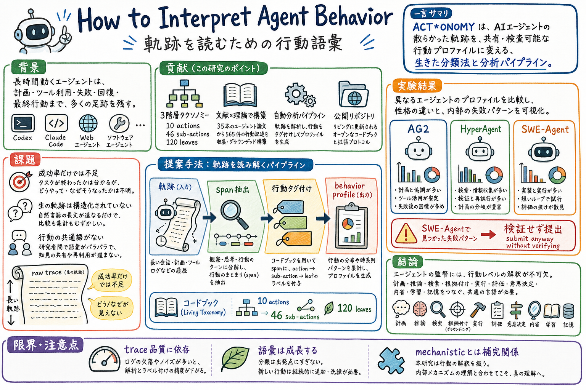

1
第一の貢献は、AIエージェントの行動を記述する三階層の分類体系である。ACT*ONOMY は、10個の大分類、46個の小分類、120個の細分類からなる。計画、推論、検索、外部環境とのやり取り、実行、評価、意思決定、反省、学習、記憶操作といった行動を分けて扱う。
Reading artifact
長時間動くAIエージェントの記録は、成功率だけ見ても「何をしていたのか」「なぜ失敗したのか」が分からない。この論文は、ACT*ONOMY という行動分類と自動分析の仕組みで、読みにくい実行軌跡を人間が比較できる行動プロフィールに変える。

この論文の中心問いは、長時間動くAIエージェントの行動をどう読むかである。Codex、Claude Code、Web操作エージェント、ソフトウェア修正エージェントのような仕組みは、計画し、推論し、検索し、ツールを使い、失敗し、回復し、最後に提出する。その過程は長い実行記録として残るが、最終的に成功したかどうかだけを見ても、中で何が起きていたのかは分からない。
著者らはこの問題に対して、ACT*ONOMY という行動分類を提案する。これは、AIエージェントの外から観察できる行動を、10個の大分類、46個の小分類、120個の細分類に分けるための共通語彙である。論文では、2024年から2026年のエージェント論文35本から565件の行動説明を集め、人間のレビューを通して分類体系を作っている。
ACT*ONOMY は、分類表を出すだけではない。実行記録を読み込み、観察、思考、行動のまとまりに分け、行動を示す短い箇所を抜き出し、分類ラベルを付け、最後に行動プロフィールとしてまとめる。これにより、あるエージェントがどの種類の行動に偏っているのか、どこで失敗の前兆が出ているのかを見やすくする。
実験では、AG2、HyperAgent、SWE-Agent の公開実行記録を使い、それぞれの行動プロフィールを比較している。さらに SWE-Agent の成功例と失敗例を比べ、失敗した実行では「検証が必要だと分かっている。検証できないことも分かっている。それでも提出する」という細かな失敗パターンを見つけている。
読後に残るポイントは、AIエージェントを見るには、結果の点数だけでなく、行動の読み解きが必要だということ。ACT*ONOMY はモデル内部を直接見る研究ではない。代わりに、実行記録という外から見える材料を使って、エージェントの振る舞いを説明・比較・監査するための言葉を与えてくれる。
How to Interpret Agent Behavior は、AIエージェントの実行軌跡を、人間が読める行動語彙へ変換するための論文である。ここでいう行動とは、計画、推論、検索、ツール呼び出し、評価、終了判断、反省、記憶の更新など、実行中に外から観察できる振る舞いを指す。
論文の問題意識は、エージェントが長く複雑に動くほど、成功率やベンチマーク点数だけでは設計改善に必要な情報が足りなくなることにある。成功したかどうかは分かっても、良い計画だったのか、同じ場所を回っていたのか、検証を省いたのか、失敗から回復できたのかは分からない。
そこで著者らは、ACT*ONOMY という行動分類と、自動分析の仕組みを提案する。長い実行記録を、根拠となる本文箇所つきの行動ラベルに変え、行動プロフィールとして比較できるようにする試みである。
第一の貢献は、AIエージェントの行動を記述する三階層の分類体系である。ACT*ONOMY は、10個の大分類、46個の小分類、120個の細分類からなる。計画、推論、検索、外部環境とのやり取り、実行、評価、意思決定、反省、学習、記憶操作といった行動を分けて扱う。
第二の貢献は、分類体系の作り方を明示していること。著者らは35本の査読付きエージェント論文から565件の行動説明を集め、既存の認知アーキテクチャ研究を足場にしながら、人手レビューを通して分類を育てている。
第三の貢献は、この分類を実行記録に当てはめる自動分析の仕組みである。実行記録を観察、思考、行動の単位に分け、行動を示す箇所を抜き出し、大分類、小分類、細分類のラベルを付ける。その結果を、統計、区間ごとの要約、行動プロフィールとしてまとめる。
第四の貢献は、ACT*ONOMY を固定された完成品ではなく、今後のエージェントの変化に合わせて伸ばせる分類体系として公開している点である。新しい行動が出てきたときに分類を追加できる手順も用意している。
分類体系の構築は大きく二段階で進む。まず、既存理論から初期の分類表を作り、論文中の行動説明を「何を、どうする」という形にそろえる。そのうえで、言語モデルによる候補提案と、6人の共著者による確認・修正を通して分類を広げていく。
この過程で、候補文664件のうち対象外の99件を除き、565件の行動説明から分類表を作っている。その後、複数回の人手レビューを通して、最終的に120個の細分類を含む形に整理している。
分類の妥当性も確認している。別に取っておいた行動説明文に対して2人の人間が分類したところ、大分類では高い一致、小分類でも十分な一致が得られた。さらに、自動分析役の言語モデルも、人間の分類とかなり近い結果を出している。
実行記録の分析では、まず長い記録を観察、思考、行動のまとまりに分ける。次に、思考や行動の中から、行動を示している短い箇所を抜き出す。そして、それぞれの箇所に大分類、小分類、細分類のラベルを付ける。
最後に、ラベル付きの実行記録を集計し、意味のある区間ごとにまとめ、何が起きていたかを行動プロフィールとして提示する。これにより、人間が長い記録を全部読む前に、どの行動が多いのか、どこに失敗の前兆があるのかを見られる。
大規模分析では、エージェント関連論文211本から抽出された3,455件の行動説明に ACT*ONOMY を適用している。大分類では、外部とのやり取りと推論が大きな割合を占める。一方で、細分類まで見ると分布はかなり広がり、エージェントの行動語彙が細かく多様であることが分かる。
エージェント間の比較では、AG2、HyperAgent、SWE-Agent の公開実行記録を分析している。AG2 は評価、外部とのやり取り、意思決定が相対的に多い。HyperAgent は反省、推論、記憶操作が多い。SWE-Agent は実行が大きく多い。これは、それぞれの設計思想や解くタスクの違いを反映している。
同じエージェント内の比較では、SWE-Agent の成功例と失敗例を見ている。成功例は、バグを見つける、修正する、検証する、提出する、という流れが比較的きれいに並ぶ。一方、失敗例は、探索、行き止まり、別の行き止まり、正しいファイルの発見、修正と提出、という長い迷走を含む。
特に面白いのは、失敗例の細かなラベルから「検証せず提出」というパターンが見える点である。エージェントは、検証が必要だと認識している。検証できない理由も認識している。それでも最終的に提出してしまう。この細部は、成功/失敗や実行ターン数だけでは見えにくい。
論文は、ACT*ONOMY によって、エージェント間では設計や得意領域の違いが見え、同じエージェント内では失敗の前兆や行動の偏りが見えると主張している。
ACT*ONOMY は、完成済みの永久分類ではなく、出発点として提示されている。大分類と多くの小分類は比較的安定する想定だが、細分類は新しいエージェント設計、ツール利用、入出力形式に応じて増えていく。
分析の質は、実行記録の質に強く依存する。思考、ツール呼び出し、観察結果、実行した操作が十分な細かさで残っていなければ、行動の抜き出しや分類も粗くなる。
分類体系は、研究論文に書かれた行動説明を大きな根拠にしている。そのため、実運用ではよく起きるが、まだ論文で十分に語られていない行動は拾いにくい可能性がある。著者らは、分類を後から追加できる仕組みでこの問題に対応しようとしている。
ACT*ONOMY は、モデル内部の仕組みを直接解明するものではない。あくまで実行記録に現れた行動を読むための方法である。内部状態の分析とは競合するものではなく、外から見える行動の記述として補い合う関係にある。
Figure 1 は、SWE-bench の実行記録に ACT*ONOMY のラベルを付ける例である。長い記録の中の観察、思考、行動に対して、確認、つまずき、原因特定のようなラベルを付ける意味が分かりやすい。
手法の図は、分類体系を作る流れを見る場所である。初期分類、行動説明、言語モデルによる候補提案、人手レビュー、妥当性確認、分類の拡張という流れを確認できる。
分類体系の全体図は、10個の大分類と46個の小分類を見る入口である。計画、推論、評価、実行、記憶操作などをどう分けているかを把握するのに向いている。
実験の図は、エージェント間比較と、同じエージェント内の成功例・失敗例の比較を見る場所である。AG2、HyperAgent、SWE-Agent の行動プロフィールの違いと、SWE-Agent の成功例・失敗例の流れを追うと、この分類が何に効くかが分かる。
この論文は、エージェントの性能を直接上げる手法というより、エージェントの振る舞いを読むための言葉と観察面を作る論文として読むとよい。
Counterfactual Trace Auditing と並べると位置づけが見えやすい。あちらは、スキルあり/なしで実行軌跡がどう変わったかを見る。こちらは、その実行軌跡をそもそもどんな行動ラベルで読めばよいかを扱っている。
実務に引くなら、Codex skills や paper-watch の実行ログを、成功/失敗だけでなく、計画、検索、評価、実行、反省、記憶操作の分布として眺める小さな点検表を作れないか、と考えるのがよい。
長く複雑に動くAIエージェントの行動を、人間が共有できる言葉でどう記述し、比較し、監査するか。
成功率はタスクが終わったかどうかを示すだけで、エージェントがどう計画し、どこで迷い、どう検証し、どの失敗パターンに入ったかを示さないから。
AIエージェントの外から見える行動を分類するための共通語彙。10個の大分類、46個の小分類、120個の細分類で、長い実行記録を行動タグとして読めるようにする。
35本の査読付きエージェント論文から565件の行動説明を集め、既存理論を足場にしながら、人手レビューを通して作られた。
外部環境とのやり取り、検索、推論、計画、評価、意思決定、実行、反省、学習、記憶操作が含まれる。
長い実行記録を観察、思考、行動の単位に分け、行動を示す箇所を抜き出し、分類ラベルを付け、行動プロフィールとしてまとめる。
AG2、HyperAgent、SWE-Agent は、それぞれ異なる行動プロフィールを持つ。同じ SWE-Agent でも、成功例と失敗例では流れや行動の偏りが違う。
SWE-Agent の失敗例で見つかった「検証せず提出」。検証が必要だと分かっていて、検証できないことも分かっているのに、そのまま提出してしまう。
違う。モデル内部を見るのではなく、実行記録に現れた外から見える行動を読む研究である。内部解析とは補い合う関係にある。
分類体系は完成品ではなく出発点であり、細分類は増え続ける。また、分析の精度は実行記録の細かさと品質に強く依存する。
スキルの成功/失敗だけでなく、計画が増えたか、検索が偏ったか、評価が減ったか、実行が早すぎないか、といった行動プロフィールの変化を見る。
AIエージェントの長い実行軌跡を、読める行動語彙とプロフィールに変える論文。trace auditing や skill rot の議論に、何を観察するかの土台を与える。